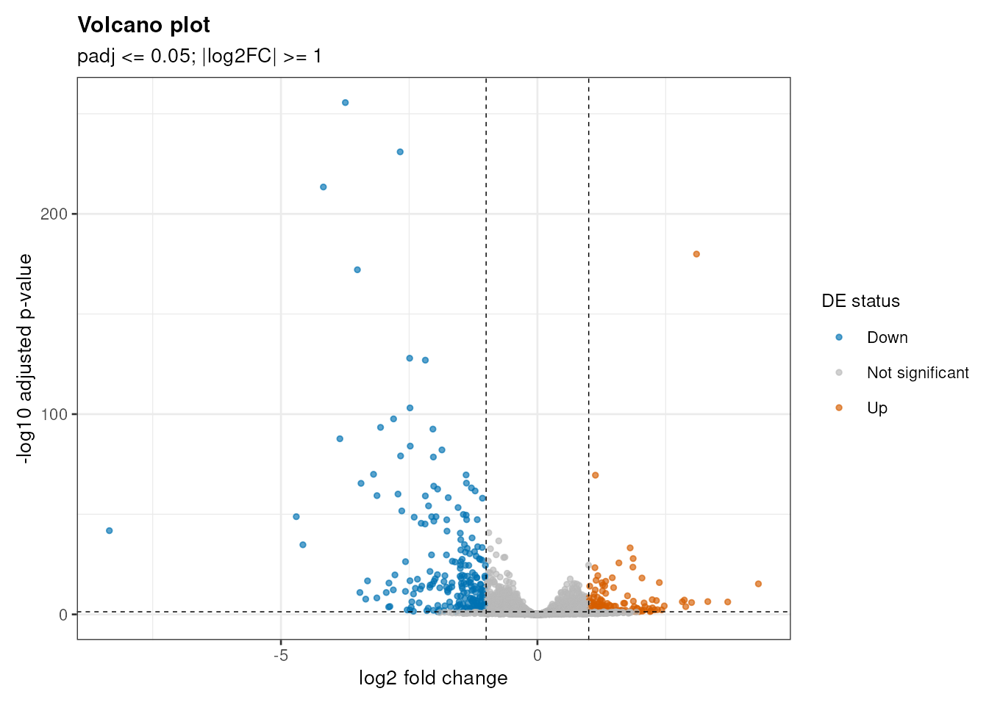
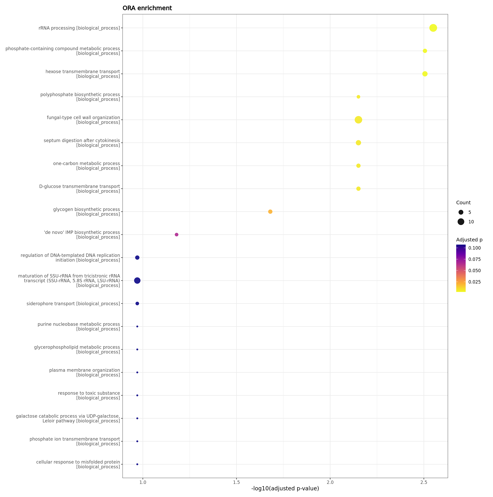

Composable subflows
可组合子流程
Reference preparation, expression quantification, differential expression, enrichment, alignment, counting, QC, and reporting remain separately testable.
参考构建、表达定量、差异表达、富集、比对、计数、QC 和报告都保持独立可测试、可复用。
TAFFISH Flow SuiteTAFFISH 流程套件
This portal explains the TAFFISH RNA-seq flow family, how the subflows connect, and how a complete yeast SNF2 example report can be inspected online.
这个门户用于解释 TAFFISH RNA-seq 流程家族、各个子流程之间的连接方式，并提供可在线查看的 yeast SNF2 示例报告。
The default route stays lightweight with Salmon-first quantification; the optional route adds genome alignment, BAM QC, and featureCounts evidence.
默认路线使用 Salmon-first 表达定量以保持轻量；可选路线补充基因组比对、BAM 质量评估和 featureCounts 计数证据。
The suite is a transparent reference route for bulk RNA-seq, not a large DAG engine. Each flow is an installable TAFFISH command with explicit inputs, outputs, logs, and provenance.
这套流程是 bulk RNA-seq 的透明参考路线，而不是大型 DAG 工作流引擎。每个流程都是可安装的 TAFFISH 命令，带有明确输入、输出、日志和溯源文件。
Reference preparation, expression quantification, differential expression, enrichment, alignment, counting, QC, and reporting remain separately testable.
参考构建、表达定量、差异表达、富集、比对、计数、QC 和报告都保持独立可测试、可复用。
rnaseq-standard-flow connects the stable subflows from FASTQ and reference inputs to a final bilingual project report.
rnaseq-standard-flow 把稳定子流程从 FASTQ 和参考输入串到最终双语项目报告。
The yeast SNF2 case shows the actual output layout, plots, linked QC reports, and interpretation guide produced by the current route.
yeast SNF2 案例展示当前路线真实生成的目录结构、图表、QC 子报告链接和解读指南。
This public example was generated from the TAFFISH RNA-seq standard route and collected by rnaseq-report-flow 0.1.0-r4.
这个公开示例由 TAFFISH RNA-seq 标准路线生成，并由 rnaseq-report-flow 0.1.0-r4 收集成报告。

PCA plotPCA 样本结构图

Volcano plot火山图

Enrichment dotplot富集气泡图